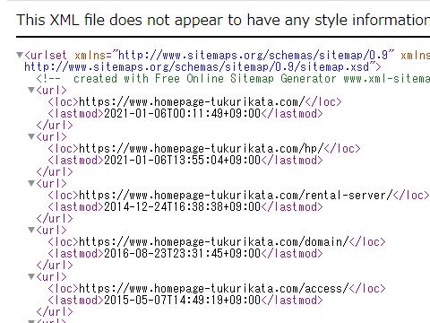
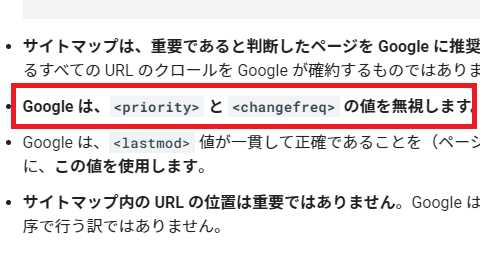
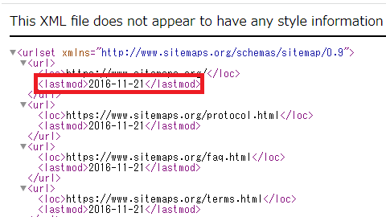

サイトマップの作り方
サイトマップには「検索エンジン用」と「訪問者用」の2種類があります。
■検索エンジン用（XMLファイル）
単にサイトマップといった場合、一般的には検索エンジン用を指すことが多いです。検索エンジンは外部からのリンク、あるいは自サイト内のリンクをたどって新しいページを発見していくため、仮にサイトマップを設置していなくても自動でインデックスはされるはずです。
けれども、サイトを作成したばかりでどこからもリンクされていない場合や膨大なページ数があるサイトで深い階層のページはあまりインデックスされません。
このような場合、サイト内のページリスト一覧を記載したXML形式の「sitemap.xmlファイル」を作成してGoogleやBingに直接送信することで、通常の巡回では見つけにくいページでも見つかりやすくなり、インデックスされやすくなります。
当ホームページでいえば、こちらのファイルになりますが、このXMLサイトマップは検索エンジン用のURLの羅列になるため訪問者には意味のないページになります。

Googleでは、XML形式のほか、テキスト形式にも対応していますが、通常はXMLサイトマップを作成するのが一般的です。
■訪問者用（HTMLファイル）
一方、訪問者用のサイトマップについては、こちらはサイト閲覧者が目的のページにたどり着きやすいように設置する目次のようなページです。
当ホームページでいえば、こちらのページになりますが、訪問者がわかりやすいようにサイト内のページ一覧をHTMLファイルにまとめておくとよいでしょう。こちらの訪問者用のサイトマップの作り方については、サイト内のURLをリスト化すればよいため、ここでは省略します。
いずれにしても、「サイトのマップ＝サイトの地図」の意味になりますので、目的のページを見つけやすくなるように設定しておくものになります。
検索エンジン用のsitemap.xmlファイルの作成方法
検索エンジン用のXMLサイトマップについては、「sitemap.xml」のファイルを以下の内容で作成し、文字コードを「UTF-8」で保存します。
このファイル名についてですが、以前までモバイル版は「sitemap_mobile.xml」などと分けていましたし、robots.txtに記載する例では「my_sitemap.xml」などとなっているため、何でも可能とは思いますが、GoogleでもBingでも「sitemap.xml」のファイル名で紹介されています。
GoogleやBing以外にも検索エンジンは存在するため、一般的なファイル名の「sitemap.xml」で作成することをおすすめします。
実際にサイトマップを作成する際は、www.sitemaps.orgに公開されているSitemaps XML formatのフォーマットを参考にするとよいでしょう。
最も単純な形式の場合、URLのリストを以下のように記載していきます。
<?xml version="1.0" encoding="UTF-8"?>
<urlset xmlns="http://www.sitemaps.org/schemas/sitemap/0.9">
<url>
<loc>１ページ目</loc>
</url>
<url>
<loc>２ページ目</loc>
</url>
</urlset>
この場合、サイトの各URLを<loc>と<url>タグで囲い、全てのURLを連ねて最終的に<urlset>で囲みます。<loc>タグ内のURLは「http://」、あるいは「https://」を含めた完全なURLの形式で記述し、5万ページ以上になる場合はサイトマップを複数に分けます。
URLのバージョンが複数ある場合、<link rel="canonical"でURLを正規化したページを記載します。
アップロードする場所は任意ですが、一般的にはホームページの「ルートディレクトリ」にアップロードします。特定のフォルダ内にアップロードした場合、そのフォルダ内のURLしか適用されないため、ルートディレクトリに設置しておくとよいでしょう。
アップロードが完了しましたら、Google Search ConsoleやBingウェブマスターツールから検索エンジンに送信しておくとよいでしょう。
もしGoogle Search Consoleなどを使用しない場合、 robots.txtにサイトマップのURLを記述しておくことでも検索エンジンにサイトマップを通知することができます。
User-agent: *
Disallow:
Sitemap: http://www.example.com/sitemap.xml
ページ数が多いサイトの場合、手動で１行ずつサイトマップを作成するのは面倒なため、www.xml-sitemaps.comにて自動で作成してからダウンロードすると簡単です。
自分のホームページのURLを指定してスタートボタンを押せば、sitemap.xmlを作成してくれます。訪問者用のファイルなども作成してくれますが、「Download un-compressed XML Sitemap」のsitemap.xmlだけで十分かもしれません。
XMLサイトマップのオプション項目の設定方法
ここまでは必須項目ですが、オプションで最終更新日の<lastmod>や重要度の<priority>、あるいは更新頻度の<changefreq>なども追加することができます。
<url>
<loc>２ページ目</loc>
<lastmod>2011-01-11T00:01:34+09:00</lastmod>
<priority>0.8</priority>
</url>
けれども、Google検索セントラルによると、Googleは<priority>と<changefreq>は無視しますとのことです。

一方、<lastmod>については一貫性があれば、使用するとのことです。そのため、オプションについては<lastmod>あたりまでを設定しておけば、問題ないかと思います。
■<lastmod>
最終更新日の<lastmod>については、ページを更新した際に日時を記載しておきます。定期的にクロールされていれば、いずれは更新されたページがあることが分かるとは思いますが、こちらを記載することでピンポイントで更新を通知できるメリットがあります。
最後の「+09:00」は日本時間の意味で、上の例の場合は「2011年01月11日の午前0時1分34秒」が最終更新日になります。
上記のsitemaps.orgには以下の記述があるため、この<lastmod>はサーバーで実際に更新された時刻になります。
「静的ファイルの場合、これは実際のファイル更新日です。UNIXのdateコマンドを使用して、次の日付を取得できます。」
当サイト運営者は、レンタルサーバーにファイルをアップロードして更新したのち、ファイルマネージャーやFTP接続などでサーバー上でのファイルの更新日時を確認していますが、秒数までは分からないことが多いです。
サーバーのファイルの更新日時が「2011年10月1日」で更新されていないのに、サイトマップの<lastmod>を今日の日付で「2021年10月1日」などと送信しても、無視されることになると思います。一貫して正確な日時を記載するように注意しましょう。
面倒な場合、上記のsitemaps.orgのサイトマップでは日付のみで設定されていますが、日付のみでもよいと思います。

ただし、最近の構造化データでは「ページの更新日」のほか、「ページの公開日」についても指定することができ、当サイトでも対応している最中ですが、この公開日については後からは分からなくなってしまうケースが多いです。
その点、もしページを更新していなければ、サイトマップの<lastmod>のデータを公開日としてそのまま使えるため、記載しておくと役立つこともあるかもしれません。個人的にはXMLサイトマップでも公開日を設定できればよいと思いますが、そのようなオプションはないようです。
そのほか、以下の<priority>と<changefreq>についてはGoogleは無視するとのことです。記載しないでよいとは思いますが、他の検索エンジンでは考慮に入れることがあるかもしれません。
■<priority>
重要度は0.0から1.0まで指定できますが、こちらは相対的なものになるため、すべてに1.0を指定しても意味がありません。強弱をつけるようにしましょう。
■<changefreq>
更新頻度については<changefreq>で指定することができます。週一回の更新なら「weekly」、月一回の更新なら「monthly」となりますが、一度公開したらそう頻繁にリライトするページはあまりないかと思います。そのため、「yearly」などとしておくとよいかもしれません。